Clinical Phenotype Discovery
k=4, rows=240, train silhouette=0.13953618705272675,
projection=PCA
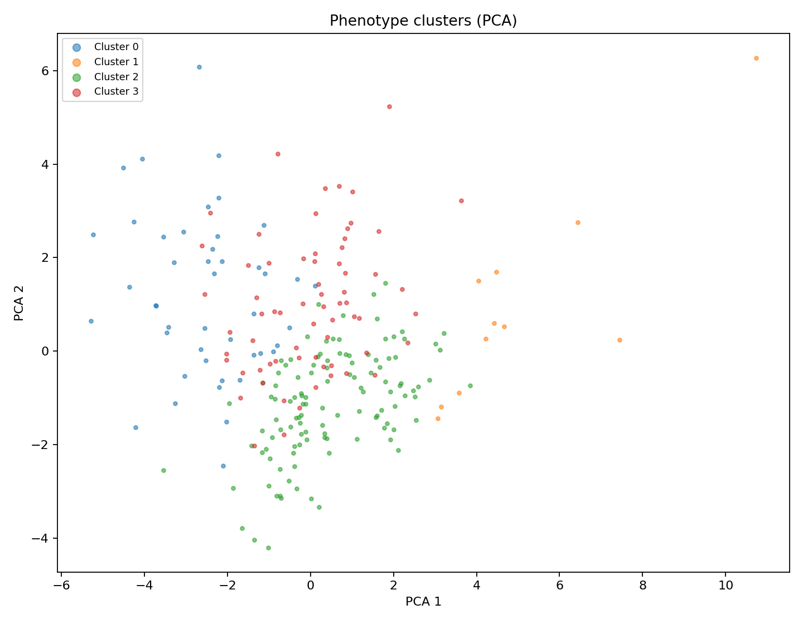
Split Cluster Counts
{
"test": {
"0": 12,
"1": 2,
"2": 42,
"3": 24
},
"train": {
"0": 22,
"1": 5,
"2": 31,
"3": 22
},
"val": {
"0": 11,
"1": 4,
"2": 44,
"3": 21
}
}
Cluster 0
Train count: 22
Label dist: {"Sad": 14, "Happy": 8}
High features
- top_mass_ratio: 1.01z
- empty_space_ratio: 0.76z
- warm_ratio: 0.61z
- dominant_orientation_abs: 0.23z
- sharp_angle_ratio: 0.03z
- figure_integrity_proxy: -0.09z
Low features
- bottom_mass_ratio: -1.01z
- centroid_y_norm: -1.00z
- stroke_darkness_std: -0.87z
- unique_hue_count: -0.87z
- bbox_area_ratio: -0.85z
- fg_area_ratio: -0.76z
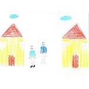
Sad
images_00010326Happy
images_00002831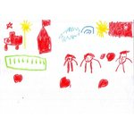
Happy
images_00000209Happy
images_00003861Cluster 1
Train count: 5
Label dist: {"Happy": 3, "Sad": 2}
High features
- skeleton_break_count_norm: 2.78z
- fg_area_ratio: 2.56z
- component_count_norm: 2.45z
- dark_color_ratio: 1.81z
- figure_integrity_proxy: 1.20z
- bbox_area_ratio: 0.54z
Low features
- empty_space_ratio: -2.56z
- dominant_orientation_abs: -0.52z
- unique_hue_count: -0.31z
- centroid_y_norm: -0.09z
- stroke_darkness_std: -0.08z
- bottom_mass_ratio: -0.05z
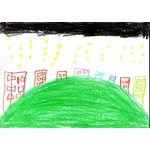
Happy
images_00004802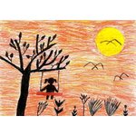
Sad
images_00000879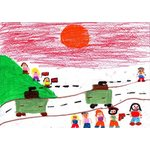
Sad
images_00007856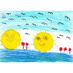
Happy
images_00003169Cluster 2
Train count: 31
Label dist: {"Happy": 19, "Sad": 12}
High features
- centroid_y_norm: 0.56z
- bottom_mass_ratio: 0.52z
- unique_hue_count: 0.46z
- bbox_area_ratio: 0.42z
- component_count_norm: 0.37z
- fg_area_ratio: 0.28z
Low features
- top_mass_ratio: -0.52z
- warm_ratio: -0.51z
- dominant_orientation_abs: -0.46z
- figure_integrity_proxy: -0.45z
- shading_ratio: -0.32z
- empty_space_ratio: -0.28z
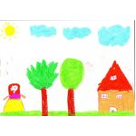
Happy
images_00003599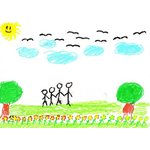
Happy
images_00004356Happy
images_00004200Happy
images_00003291Cluster 3
Train count: 22
Label dist: {"Sad": 12, "Happy": 10}
High features
- shading_ratio: 1.07z
- stroke_darkness_std: 0.96z
- stroke_darkness_mean: 0.90z
- dominant_orientation_abs: 0.53z
- figure_integrity_proxy: 0.45z
- bottom_mass_ratio: 0.30z
Low features
- component_count_norm: -0.55z
- skeleton_break_count_norm: -0.42z
- top_mass_ratio: -0.30z
- fg_area_ratio: -0.22z
- centroid_x_norm: -0.19z
- warm_ratio: 0.07z
Happy
images_00004017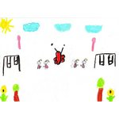
Happy
images_00000039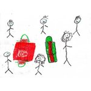
Sad
images_00008337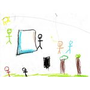
Sad
images_00006260